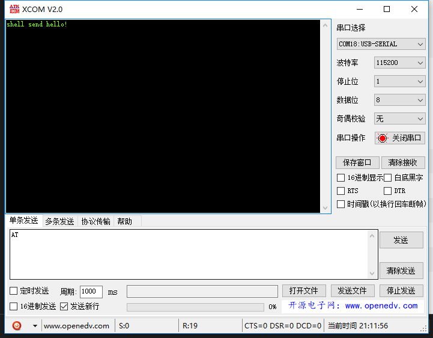
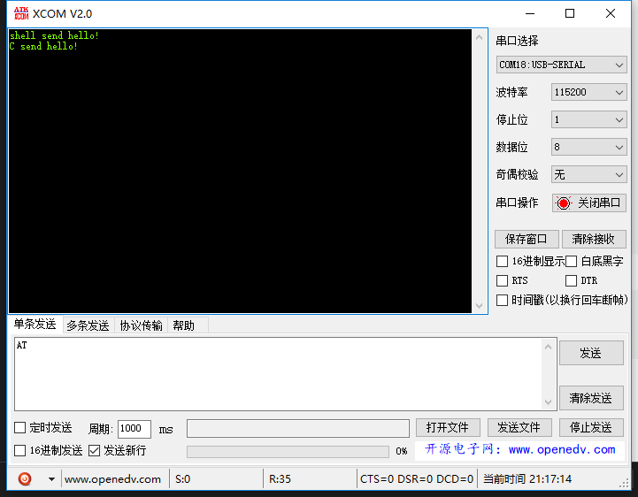

学习
OrangePI蓝牙：串口通信
- 2018-06-19
- NAke
OrangePI蓝牙：串口通信
前言
上一篇文章描述了如何使用编程的方式去搜索附近蓝牙，这一次记录我如何编程与HC-06串口蓝牙模块通信。
搜索以及配对
如果自己写程序进行搜索与配对，会十分麻烦，这里我就偷懒，使用bluez自带的方式进行蓝牙的配对。 使用bluetoothctl配对蓝牙设备，操作如下：
bluetoothctl
scan on #开启搜索
devices #查看附近设备
scan off #关闭搜索
agent on #开启代理
default-agent
pair 98:D3:37:91:00:DD #配对蓝牙，会提示输入ping码
quit #退出rfcomm通信
rfcomm是模拟串口的一种通信方式，与串口蓝牙也是以这个方式通信的。方式有两种。
命令行操作
出现一下内容代表建立rfcomm成功。
现在我们可以通过对
/dev/rfcomm0操作来发送数据，比如：可以看到蓝牙接收到这条数据了：

程序操作 编写程序如下（要先配对才可以）：
#include <stdio.h> #include <unistd.h> #include <sys/socket.h> #include <bluetooth/bluetooth.h> #include <bluetooth/rfcomm.h> #include "tlpi_hdr.h" int main(int argc, char **argv) { struct sockaddr_rc addr = { 0 }; int s, status; char dest[18] = "98:D3:37:91:00:DD"; // allocate a socket s = socket(AF_BLUETOOTH, SOCK_STREAM, BTPROTO_RFCOMM); // set the connection parameters (who to connect to) addr.rc_family = AF_BLUETOOTH; addr.rc_channel = (uint8_t) 1; str2ba( dest, &addr.rc_bdaddr ); // connect to server status = connect(s, (struct sockaddr *)&addr, sizeof(addr)); // send a message if( status == 0 ) { status = write(s, "C send hello!\n", 16); } if( status < 0 ) { errExit("connct error"); } close(s); return 0; }编译运行：
root@H5:~# gcc -o rfuart_client rfuart_client.c -lbluetooth root@H5:~# ./rfuart_client [1]+ Done rfcomm connect hci0 98:D3:37:91:00:DD结果如下：
